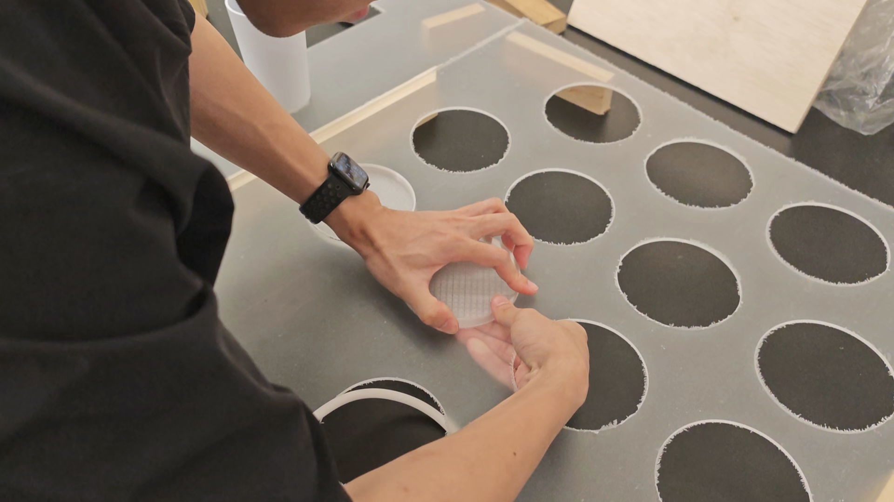
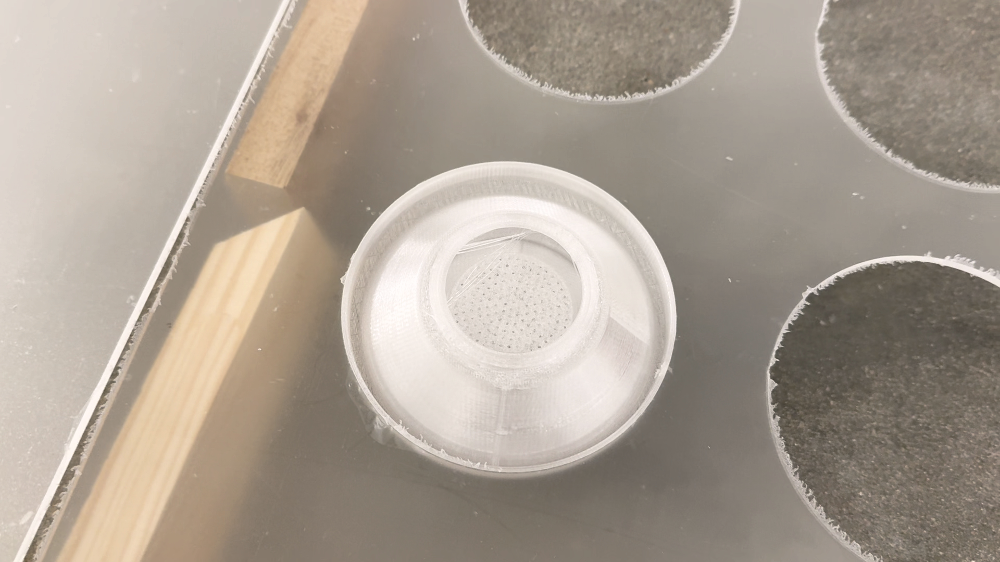
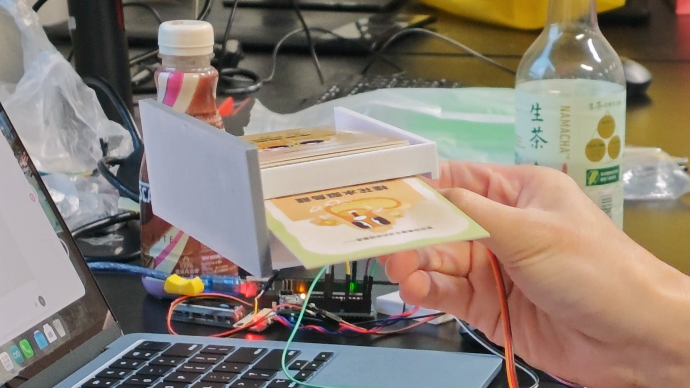
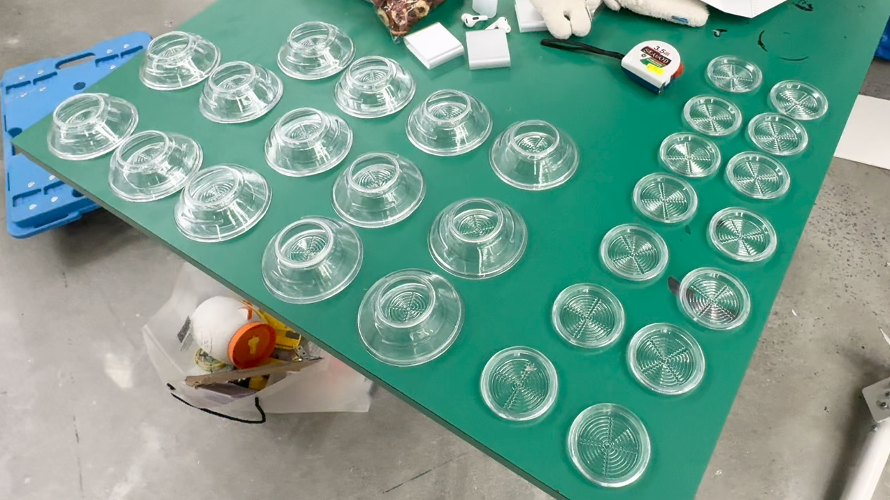
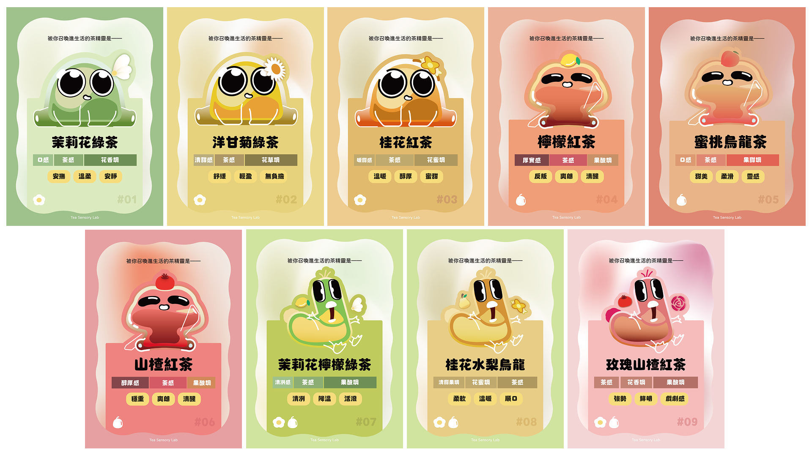
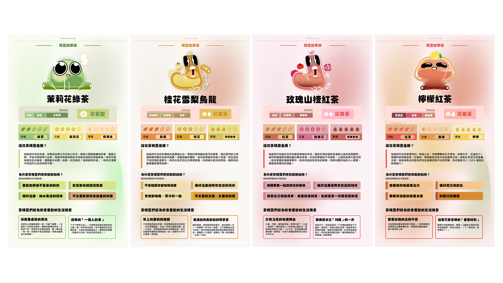

Tea Sensory Lab
Bridging Hong Kong's traditional tea heritage with Gen Z culture through custom hardware and a Godot-powered phygital experience.


The Problem
Tea suffers a compounding perception problem among younger generations in Hong Kong. Beyond being seen as old-fashioned, it loses ground to coffee on almost every dimension that matters to Gen Z: more varied flavour profiles, seamless fit into fast-paced urban lifestyles, and a vastly stronger presence online and on the street — walk through Hong Kong and coffee shops outnumber tea houses by a visible margin.
Research confirms this shift: Gen Z now accounts for approximately 71% of new tea-drinking experiences, but heavily favours customised, aesthetically shareable formats like bubble tea and matcha over traditional brews. Meanwhile, heritage tea shops are closing under rising rents and a lack of youth engagement.
We saw this not as cultural decline, but as a design opportunity: the gap exists not because tea is inferior, but because no one has made it feel personal, modern, and worth sharing.
The Experience
Tea Sensory Lab guides each user through a four-zone journey to discover their Tea Spirit — a personalised character archetype matched to a unique tea blend. The experience takes approximately 5–8 minutes and requires no staff assistance.
Zone 1 — Discover Your Profile
A teacup sits on an illuminated tabletop. Slide it across glowing options to navigate an 8-question personality quiz. Shake the cup to confirm each answer.
The quiz maps your responses to one of 9 Tea Spirit archetypes, each corresponding to a unique blend of tea base, flower, and fruit.
Zone 2 — Collect Your Ingredients
The table reveals your personalised recipe. A breathing light pulses at each ingredient station in sequence — lift the indicated bottle to collect it. Pick up the wrong one, and the system halts until it is returned.
The ingredients you collect are real — the bottles contain the actual components of your blend.
Zone 2.5 — Smell Your Blend
Stack your collected bottles on the Scent Platform. Squeeze the air bulb. A burst of your blended aroma is pushed directly toward you — your first sensory encounter with your tea, before it has ever been brewed.
Zone 3 — Summon Your Tea Spirit
Your Tea Spirit arrives on the tabletop as a volatile fog. Push the physical slider across the table to scan and resolve it — the fog clears to reveal your character. The wall display toggles between your tea's flavour science data and your Spirit's personality lore.
High-five the character on the tabletop. The Spirit reacts, and a premium postcard is dispensed — one side your Tea Master's Guide, the other your Spirit's story. A QR code appears on screen to save and share your result.
The system resets. The next user begins.
The Process
Research Foundation
Before any hardware was built, the project was grounded in three months of research spanning consumer psychology, multisensory flavour science, and local cultural history.
- Up to 80% of perceived flavour comes from smell, not taste — directly informing the scent-mixing zone design
- Hong Kong has a largely forgotten tea cultivation history, from 17th-century Qing Dynasty plantations on Castle Peak to the collapsed Ngong Ping Tea Plantation on Lantau
- Two fieldwork visits to Kadoorie Farm and Botanic Garden (KFBG) with the Regenerative Agriculture Department and Hong Kong Tea Research Institute grounded the narrative in real industry context

System Architecture
The installation runs across four zones inside a unified Lab cabinet, all communicating with a Godot state-machine controller via Serial protocol.
| Zone | Interaction | Hardware |
|---|---|---|
| Zone 1 — Quiz | Slide cup to navigate, shake to confirm | ESP32-C3 + MPU6050 Smart Teacup, IR touch surface |
| Zone 2 — Ingredients | Lift correct ingredient bottles | High-precision FSR array × 11 stations |
| Zone 2.5 — Scent | Squeeze air bulb to release aroma | Sound-peak sensor + pneumatic scent tower |
| Zone 3 — Ritual | Scan spirit with slider, high-five to claim | Linear potentiometer + capacitive touch sensor + 9-channel motorised dispenser |
Key Technical Decisions
Game Engine — HTML vs Godot
Both were within my development experience — the choice came down to integration depth.
- Serial communication with Arduino was native and stable in Godot; WebSerial in a browser added unpredictable overhead
- Custom shaders for the fog dissolve and high-five particle effects required a dedicated rendering pipeline
- State machine and asset management suited a system running continuously for hours without browser runtime interference
- Existing familiarity with Godot increased team velocity from day one
Table Fabrication — One-Piece Custom vs Acrylic Laser Cutting + 3D Printing
A 12-slot tabletop with precisely dimensioned sensor cutouts and cable routing had no off-the-shelf equivalent.
- One-piece custom fabrication carried prohibitive cost, transport overhead, and no tolerance for late-stage design changes
- Laser-cut acrylic panels allowed cutout dimensions to be iterated without re-ordering an entire piece
- 3D-printed basin inserts handled precise sensor clearances and cable routing channels that flat-cut acrylic alone couldn't achieve
- The hybrid approach matched dimensional accuracy at a fraction of bespoke fabrication cost — critical on a student budget



Answer Confirmation — IR Dwell Time vs Shake to Confirm
Early prototypes used 3-second IR hover to confirm answers, causing two problems: accidental confirmations when users hesitated, and a passive waiting experience that broke immersion.
- Near-zero false trigger rate — a deliberate shake is unambiguous; dwell time is not
- Tea science connection — shaking mixes saponins with air to stabilise foam texture, and releases volatile aromatic compounds responsible for floral and fruity fragrance, giving the gesture a meaning beyond UI mechanics
- Labour Illusion (UX psychology) — active motion makes perceived wait time shorter and increases the user's sense of value in the result
- Appropriate for a low-frequency, entertainment-first installation where theatrical engagement outweighs speed
Material Detection — Film Pressure Sensor vs Photoresistor
Zone 2 needed reliable bottle-lift detection, but the ingredient bottles were intentionally light.
- FSR sensors fell within the noise floor for these bottle weights — readings were inconsistent
- The transparent resin basins allowed ambient light to pass through when empty; bottle contents blocked it reliably when placed — a naturally stable photoresistor setup
- Simpler calibration and no mechanical wear from repeated loading across a full exhibition day

Scent Activation — Barometric Pressure vs Sound-Peak Sensor
Detecting a hand squeeze on an air bulb needed to be consistent across all users' grip strengths.
- BMP280 barometer was insufficiently sensitive to hand-squeeze pressure changes — readings varied too widely between users
- A sound-peak sensor detecting the acoustic rush of air from the nozzle produced a consistent, grip-independent trigger signal
- No physical contact between sensor and bulb mechanism — simpler assembly, no wear-related failure risk
Hardware Iteration
Every physical component was custom-engineered from scratch. No off-the-shelf product met the spatial, aesthetic, and Arduino integration requirements simultaneously.
- Card dispenser — 9 full build iterations resolving structural instability, FDM overhangs, surface friction, servo misalignment, exit momentum loss, and card corner snagging before achieving consistent single-card ejection
- Scent vessels — 8 iterations; switched from injection-moulded acrylic (700 RMB/unit) to transparent resin 3D printing (150 RMB/unit) with a threadless silicone O-ring seal
- Cabinet exterior — unified disparate fabrication materials into a monolithic Lab aesthetic by wrapping all opaque surfaces in textured wallpaper, preserving only the transparent acrylic front edge as an intentional design detail


Visual & Character Design
Nine Tea Spirit IP characters were designed under a modular species system, mapping each character's geometry and colour directly to its tea profile.
| Species | Silhouette Base | Tea Types | Design Language |
|---|---|---|---|
| Floral | Circle | Jasmine, Osmanthus, Rose | Soft, rounded, approachable |
| Fruity | Rectangle | Lemon, Peach, Asian Pear | Relaxed, elongated, chill vibe |
| Floral-Fruity | Triangle | Chamomile blends | Balanced, expressive |


Each character's primary colour was mapped to its tea liquor's reference from tasting literature — straw-to-jade for green tea, bright amber for oolong, copper-red to mahogany for black tea. Silhouettes evolved through three rounds of advisor feedback, from an overly complex slime-base direction to a simplified, instantly readable animal-like form with expressive eyes and a species-specific headpiece. The modular system allows future archetype expansion at low incremental design cost.
The Result
"Distinguished by thorough background research and on-site fieldwork, strong hardware product design — including an independently developed card dispenser and scent-permeable storage vessels — and a cohesive visual and character identity throughout."
— FYP Supervisor, Ms. Koala Yip, School of Creative Media, CityU
Across the 12-week implementation phase, I was solely responsible for:
- Awarded Grade A
- Arduino and sensor architecture across all four zones
- Godot–hardware Serial integration and state-machine logic
- Card dispenser fabrication and iteration (9 builds)
- Scent vessel design and iteration (8 builds)
- Acrylic tabletop specification and assembly
- UI visual identity and projection layout
- All 9 Tea Spirit IP character designs